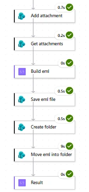

- Power Automate
- Level 7 · Files, email and documents · 7 of 7
SharePoint attachments, folders and moving files
Lists and libraries store files differently: a list item can carry attachments; a library holds files in folders. The SharePoint connector has actions for both.
The demo
WhatAttachment actions for list items; folder and move/copy actions for libraries.
WhyRequests carry evidence files; documents need filing in the right folder.
DemoAttach a note to a request, build an .eml, file it in a new archive folder.
The demo flow
Add attachment to a list item
Get attachments → 1
Build and save an .eml
Create folder Website demo archive
Move file into the folder


List item attachments
| Action | Inputs |
|---|---|
| Add attachment | Site, list, item ID, file name, content |
| Get attachments | Site, list, item ID → name, ID, link each |
| Get attachment content | The attachment ID, to read or forward it |
Email every attachment of an item
Get attachments
Apply to each: Get attachment content
Append to array
{"Name": …, "ContentBytes": …}Send an email: Attachments = the array
Folders and moving files
| Need | Action |
|---|---|
Create a folder (also nested, e.g. 2026/November) | Create new folder |
| Move a file (folder, library or site) | Move file: source file ID, destination, name-conflict behaviour |
| Copy a file | Copy file: same inputs; original stays |
| Move a whole folder | Move folder |
Watch out
- Moving keeps version history; download and re-upload doesn't.
- Moves between sites can take seconds (9 s in the demo); check the action finished before reading the file at its new place.
- File actions use the file identifier, not the item ID number.
New to this? Start from the basics optional
Name conflict behaviour: fail, replace, or keep both with a number added.
Common mistakes
- Using the item ID where a file ID is needed.
- Download + re-upload instead of Move.
- Reading a moved file immediately across sites.